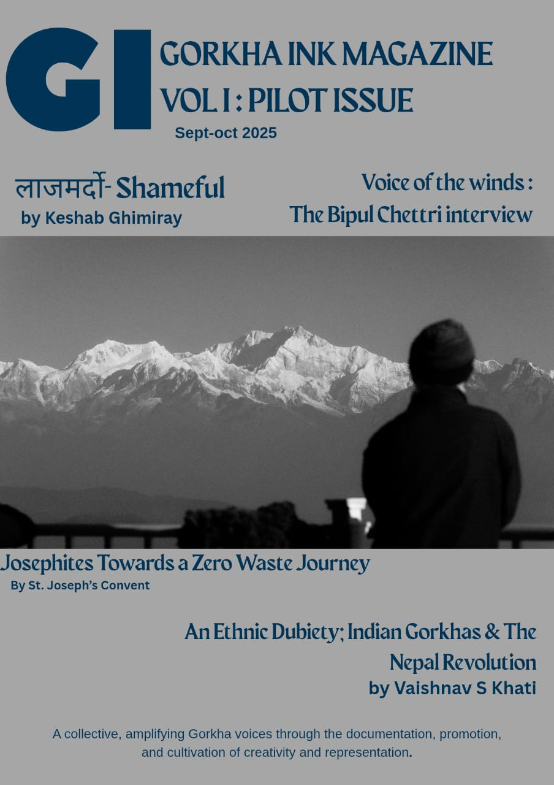

Our Mission
A collective, amplifying Gorkha voices through the documentation, promotion and cultivation of creativity and representation.
Gorkha Ink is born out of a desire to create a dedicated space for Gorkha narratives—stories that have long been pushed to the periphery of contemporary digital media. As a cultural collective, we are committed to documenting the multi-layered histories, social realities, and artistic expressions of the Gorkha community, particularly in the Indian diaspora and borderland regions.
By pairing deep investigative journalism with photography, poetry, and long-form prose, Gorkha Ink bridges the gap between traditional heritage and contemporary commentary. We believe representation is not merely about visibility; it is about reclaiming authorship over our own histories and cultivating a creative space where Gorkha voices can breathe, reflect, and inspire future generations.
By pairing deep investigative journalism with photography, poetry, and long-form prose, Gorkha Ink bridges the gap between traditional heritage and contemporary commentary. We believe representation is not merely about visibility; it is about reclaiming authorship over our own histories and cultivating a creative space where Gorkha voices can breathe, reflect, and inspire future generations.
From the Archive
View Complete Archive arrow_forward
Digital Dispatch
Gorkha Ink Digital
Extend the conversation beyond print. Subscribe to our Substack for weekly essays and digital archives, and follow our official Instagram page for visual stories and updates.